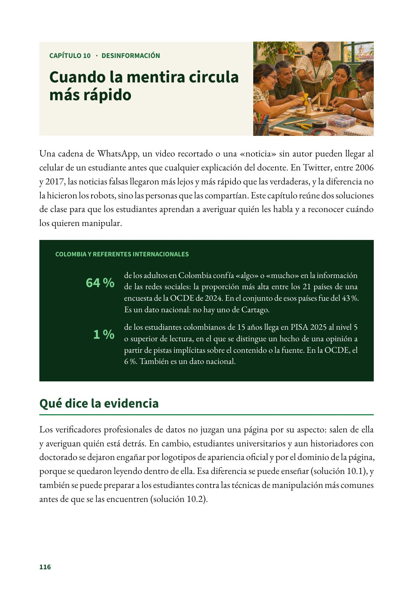

Cuando la mentira circula más rápido
Una cadena de WhatsApp, un video recortado o una «noticia» sin autor pueden llegar al celular de un estudiante antes que cualquier explicación del docente.
PDF · 2 págs. · 887 KBUna cadena de WhatsApp, un video recortado o una «noticia» sin autor pueden llegar al celular de un estudiante antes que cualquier explicación del docente. En Twitter, entre 2006 y 2017, las noticias falsas llegaron más lejos y más rápido que las verdaderas, y la diferencia no la hicieron los robots, sino las personas que las compartían. Este capítulo reúne dos soluciones de clase para que los estudiantes aprendan a averiguar quién les habla y a reconocer cuándo los quieren manipular.
El problema en Cartago
- 64 % de los adultos en Colombia confía «algo» o «mucho» en la información de las redes sociales: la proporción más alta entre los 21 países de una encuesta de la OCDE de 2024. En el conjunto de esos países fue del 43 %. Es un dato nacional: no hay uno de Cartago.
- 1 % de los estudiantes colombianos de 15 años llega en PISA 2025 al nivel 5 o superior de lectura, en el que se distingue un hecho de una opinión a partir de pistas implícitas sobre el contenido o la fuente. En la OCDE, el 6 %. También es un dato nacional.
Qué dice la evidencia
Los verificadores profesionales de datos no juzgan una página por su aspecto: salen de ella y averiguan quién está detrás. En cambio, estudiantes universitarios y aun historiadores con doctorado se dejaron engañar por logotipos de apariencia oficial y por el dominio de la página, porque se quedaron leyendo dentro de ella. Esa diferencia se puede enseñar (solución 10.1), y también se puede preparar a los estudiantes contra las técnicas de manipulación más comunes antes de que se las encuentren (solución 10.2).
Las dos soluciones tienen evidencia prometedora: hay ensayos bien hechos con resultados positivos, pero los efectos son pequeños y se desvanecen si no se practican a lo largo del año. No se encontraron evaluaciones en Colombia ni en América Latina.
Lo que no funciona
- Juzgar una página por su apariencia: el logotipo, el diseño, el dominio (.org o .com) o la cantidad de datos. Es la «lectura vertical», y engaña a estudiantes y aun a historiadores con doctorado.
- Una sola dosis. En Alemania, la mejora de los adultos que recibieron una intervención de lectura lateral ya no se distinguía de la del grupo de control a las dos semanas (solución 10.1). Con el juego Bad News, sin repasos, el efecto dejó de ser significativo a los dos meses (solución 10.2).
Para entender por qué la desinformación prospera, el Tomo I de la Colección MILC, El Mercado de la Atención, explica cómo se disputa la atención de los jóvenes y cómo educar el criterio en la era onlife. Este capítulo se queda con lo que el docente puede hacer en clase.
Fuentes del capítulo
Fuentes
Organización para la Cooperación y el Desarrollo Económicos. (2024). Media consumption and privacy. En OECD Digital Economy Outlook 2024 (Volume 2): Strengthening connectivity, innovation and trust. OECD Publishing. oecd.org
Organización para la Cooperación y el Desarrollo Económicos. (2026). PISA 2025 results (Volume I): Colombia [Nota de país]. OECD Publishing. oecd.org
Vosoughi, S., Roy, D. y Aral, S. (2018). The spread of true and false news online. Science, 359(6380), 1146–1151. doi.org
Wineburg, S. y McGrew, S. (2019). Lateral reading and the nature of expertise: Reading less and learning more when evaluating digital information. Teachers College Record, 121(11), 1–40. doi.org
Así se ve en el libro
2 páginas